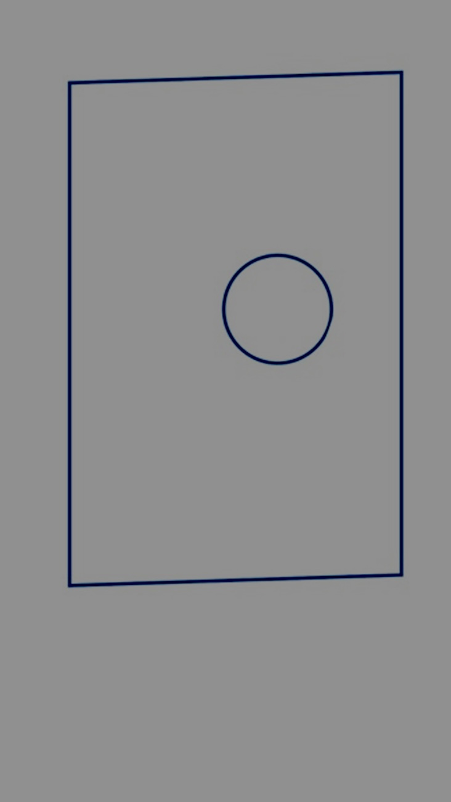
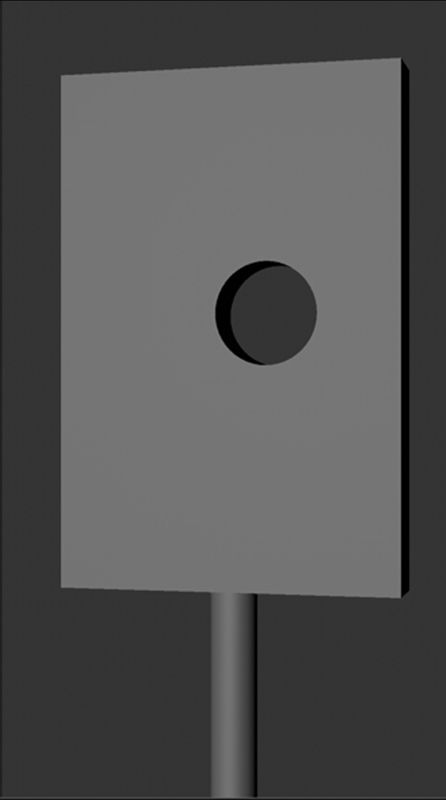
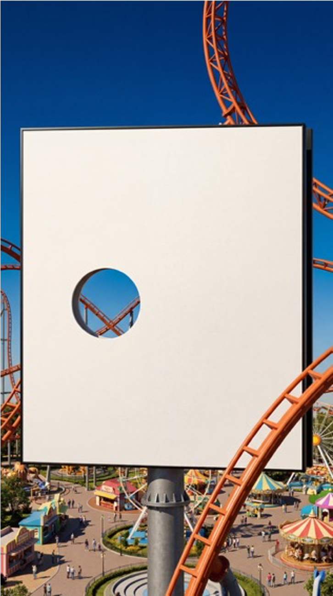
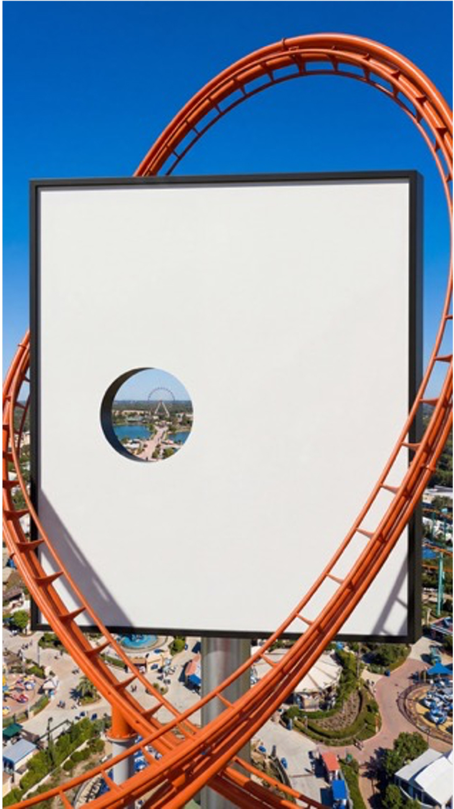
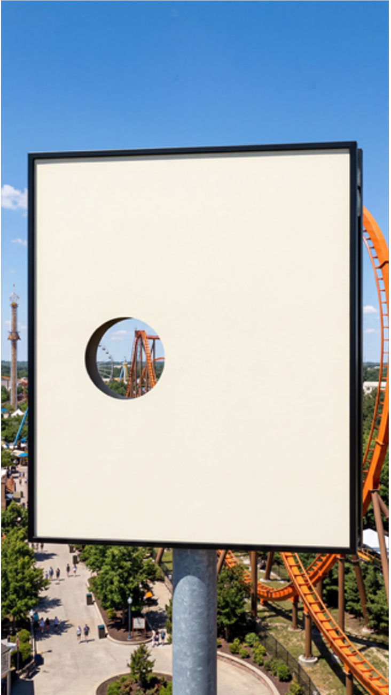

Smooth Delivery is a social campaign for IAMS built around a smart, budget-conscious hybrid AI pipeline that I designed and engineered & produced from the ground up.
The brief was clear: utilise generative AI but maintain enough control to handle client feedback without spiralling costs. Knowing how unpredictable fully AI-generated content can be, I proposed breaking the social down into three distinct components: the background, the billboard with the cat comped on, and the rollercoaster. Each element was treated differently based on what the technology could reliably deliver. The background and billboard were generated in AI, while the rollercoaster was handled using stock footage and rotoscoped out by the internal team, a deliberate call based on the complexity of fast movement and talent licensing.
The pipeline itself was built in Runway using custom system prompt nodes, each assigned a specific task. One of the more considered moments was taking Hash's low-fidelity 3D billboard angle, created specifically to nail the rollercoaster exit perspective, and using that as the foundation to build the approved scene in AI, giving us precise creative control at every stage.





Throughout the process I guided the client team through each generative AI decision, managed the picture lock on each component, and flagged anything that needed attention before it became a problem. Motion across the piece was rotoscoped by the internal team, with the background motion generated by me. Sound design and grade were handled by the brilliant team at No.8.
The client was delighted with the result, a polished and purposeful piece of social that punched well above its budget.
Agency: adam&eveDDB
Creative: Paul Knott & Jessica Morris
AI Prompting & Workflow: Richard Bailey
Motion Design: Hash Khan
Producer: Richard Bailey
Agency Producer: Catharina Van Leuven & Jaki-Jo Hanan
Account Team: Stephanie Taylor
Sound & Colour: No.8